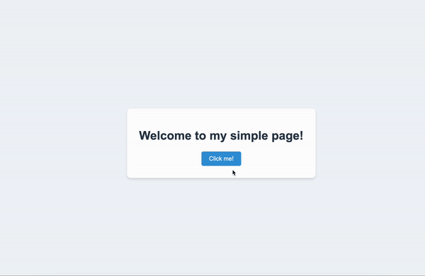

I am planning to do a big project with FastAPI and HTMX soon. To prepare for this project I decided to create a short example on how to use HTMX with FastAPI.
HTMX is a JavaScript library that allows to add interactivity to HTML without writing any JavaScript. It works by adding custom attributes to HTML elements, which trigger HTTP requests when events occur. HTMX then updates the page by swapping in the HTML returned by the server, making it incredibly easy to create dynamic, interactive web applications with minimal code.
You can find the repository for this project here.
First, let’s install FastAPI and add Jinja2:
# Create a virtual environment
python -m venv .venv
source .venv/bin/activate
pip install "fastapi[all]" jinja2Alternatively, you can clone the repo and use it like this:
git clone https://github.com/zeniro-codes/tutorials.git
cd tutorials/01_fastapi_htmx
python -m venv .venv
source .venv/bin/activate
pip install -r requirements.txtNow that we have our environment set up, let’s create the main application file. Create a file named main.py and add the following code:
main.py
from fastapi import FastAPI, Request
from fastapi.templating import Jinja2Templates
from fastapi.staticfiles import StaticFiles
from fastapi.responses import HTMLResponse
# Helps to render HTML templates located in the "templates" folder.
templates = Jinja2Templates(directory="templates")
app = FastAPI(title="HTMX example")
# Makes files in the "static" directory accessible via the "/static" URL path.
# It's crucial for serving our CSS and JavaScript files with Jinja2, see index.html
app.mount("/static", StaticFiles(directory="static"), name="static")
# Renders the "index.html" template, passing the request object to the template.
# The response_class=HTMLResponse tells FastAPI that this route returns HTML content.
@app.get("/", response_class=HTMLResponse)
def main(request: Request) -> HTMLResponse:
return templates.TemplateResponse(request=request, name="index.html")
# Responds to GET requests at "/click".
# When called (triggered by HTMX), it returns a simple HTML paragraph saying "You clicked!".
# The underscore (_) for the parameter name indicates
# that we're not using the request object in this function.
@app.get("/click", response_class=HTMLResponse)
def click(_: Request) -> HTMLResponse:
return "<p>You clicked!</p>"We return HTMLResponse class because HTMX expects an HTML as a response.
Next, let’s create our HTML template. Create a directory named templates and inside it, create a file named index.html. See comments for details on how it works:
templates/index.html
<!DOCTYPE html>
<html lang="en">
<head>
<meta charset="UTF-8">
<meta name="viewport" content="width=device-width, initial-scale=1.0">
<title>Simple Page</title>
<!-- HTMX - https://htmx.org/ -->
<!--
Jinja2 template syntax: {{ url_for('static', path='/js/htmx.js') }}
This generates the correct URL for our static files.
The 'defer' attribute ensures the script loads after the HTML is parsed.
Alternative, you can install by using the CDN: https://htmx.org/docs/#via-a-cdn-e-g-unpkg-com
-->
<script src="{{ url_for('static', path='/js/htmx.js') }}" defer></script>
<!--
Similarly, we use Jinja2 to generate the URL for our CSS file.
This ensures our static files are properly linked regardless of the server configuration.
-->
<link rel="stylesheet" href="{{ url_for('static', path='/css/styles.css') }}" />
</head>
<body>
<div class="container">
<h1>Welcome to my simple page!</h1>
<!--
HTMX attributes:
- hx-get="/click": This tells HTMX to make a GET request to the "/click" endpoint when this button is clicked.
- hx-swap="outerHTML": This instructs HTMX to replace the entire button element with the response from the server.
When clicked, HTMX will send a request to our FastAPI backend, receive the response,
and replace this button with the content returned (in this case, "You clicked!").
-->
<button hx-get="/click" hx-swap="outerHTML">Click me!</button>
</div>
</body>
</html>This setup allows for dynamic content updates without writing any custom JavaScript. When the button is clicked, HTMX sends a request to our FastAPI backend, receives the response (which is just the text “You clicked!”), and replaces the button with this new content.
Now, let’s prepare the static directory. This directory will contain all our static files, including CSS and JavaScript. Here’s how to set it up:
- Create a static directory in your project root.
- Inside static, create two subdirectories:
cssandjs. - In the css directory, create a file named styles.css and add your custom styles. You can take them from the provided repo.
- In the js directory, we’ll add the HTMX library. You can take it from the provided repo.
Your final project tree should resemble something like this:
├── 01_fastapi_htmx
│ ├── .venv
│ ├── main.py
│ ├── requirements.txt # might be omitted if you did not clone a tutorial
│ ├── static
│ │ ├── css
│ │ │ └── styles.css
│ │ └── js
│ │ └── htmx.js
│ └── templates
│ └── index.htmlTo run the example, you can use this command in the root directory of the project:
fastapi run main.pyAnd if you open http://0.0.0.0:8000/, you can see the following result:
